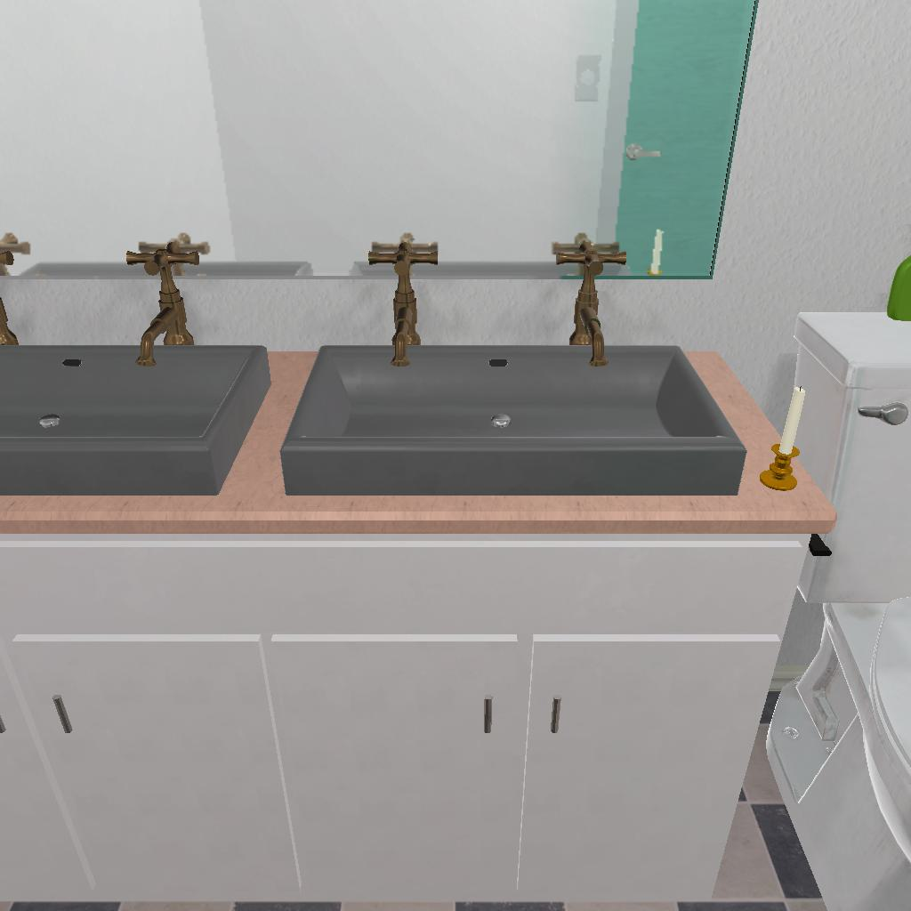
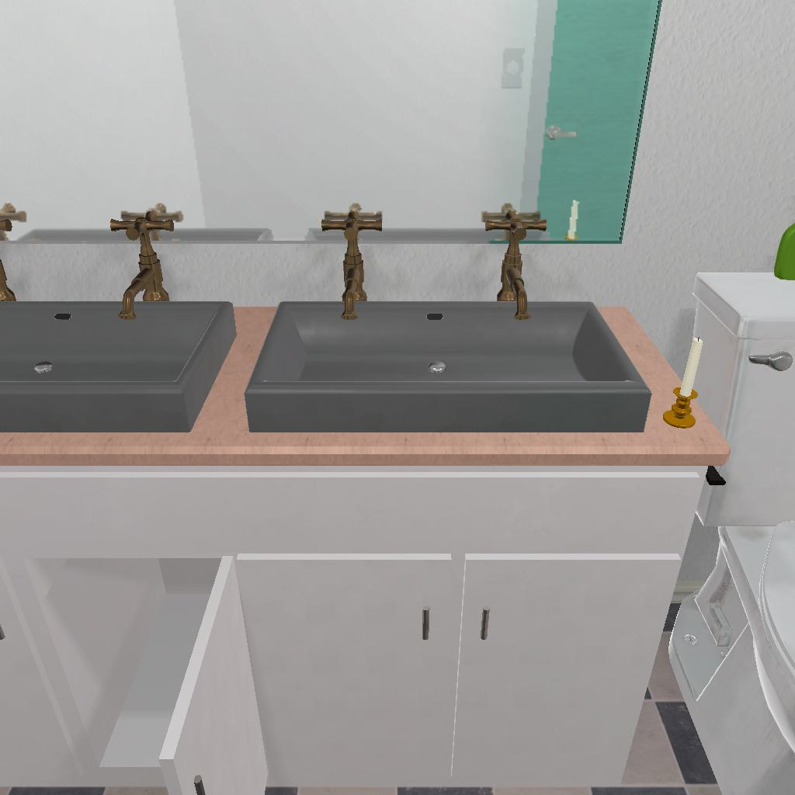

---------------------------------------------------------task: 9---------------------------------------------------------
--------------------------------------------------------------------------------------------------------------------------------------------------------------------
--------------------------------------------------------------------------------------------------------------------------------------------------------------------
Step:--------------------------------------------------------------------------4-------------------------------------------------------------------------------
----------------------------------------
VLM Prompt:
Image1:
Image2:
Image3:
**Instruction**
1. Analyze the provided images to identify all visible household objects and compare the difference between images (e.h. whether the object is opened or not and taken on hand or not), focusing on those relevant to the task description "put some soapbottle on toilet."
2. Use the analysis of images and the task hint "The agent must find an object of the desired type, pick it up, find the correct location to place it, and put it down there." to answer the question: what is the most reasonable action in the choices for the task description "put some soapbottle on toilet"?
3. Decide and write the answer using the template: The answer is: (i): , where i is the real number. If there is no desired object in images, search every place based on **Initial Observation** to find the object. And if no one is exactly correct, choose a similar answer.
**Initial Observation**
You are in the middle of a room. Looking quickly around you, you can see bathtub (1), bathtubbasin (1), toilet (1), cabinet (1-4), sink (1-2), countertop (1), sinkbasin (1-2), toiletpaperhanger (1), towelholder (1), garbagecan (1), handtowelholder (1)
**Answer Choices**
(1): go to bathtub 1
(2): go to bathtubbasin 1
(3): go to toilet 1
(4): go to cabinet 3
(5): go to sink 1
(6): go to sink 2
(7): go to countertop 1
(8): go to cabinet 4
(9): go to sinkbasin 1
(10): go to sinkbasin 2
(11): go to toiletpaperhanger 1
(12): go to towelholder 1
(13): go to garbagecan 1
(14): go to handtowelholder 1
(15): open cabinet 2
(16): close cabinet 2
(17): examine cabinet 2
**Answer**
Let's think step by step by following the instructions.
----------------------------------------
----------------------------------------
Original Response:
First, we analyze the provided images to identify all visible household objects. In all three images, we can see two sinks, a mirror, some cabinets below the sinks, a toilet, and some objects on the sink countertop, such as a candlestick. There are no visible differences between the images; nothing seems to be opened or taken on hand.
Given the task description "put some soapbottle on toilet," we need to find an object of the desired type (soapbottle) and place it on the toilet. From the initial observation, we know there are cabinets (1-4) in the room, which are common places where a soapbottle might be stored.
Based on the analysis of images and the task hint, the most reasonable action would be to search the cabinets to find the soapbottle. Among the answer choices, the actions related to searching the cabinets are:
(4): go to cabinet 3
(8): go to cabinet 4
(15): open cabinet 2
(16): close cabinet 2
(17): examine cabinet 2
Since we are looking for an object and not just moving to its location, the action of examining the cabinet makes the most sense. Therefore, the most reasonable action from the choices provided would be to examine cabinet 2 where a soapbottle might be stored.
The answer is: (17): examine cabinet 2.
----------------------------------------
----------------------------------------
>>> Refine Original VLM Response and Get Pure Action: examine cabinet 2
----------------------------------------
-----------------------------------------------------------------
Running time: 25.623178243637085 seconds
Total Money: 4.241290000000002
-----------------------------------------------------------------
-----------------------------------------------------------------
Text Observation:On the cabinet 2, you see a faucet 1, a faucet 2, a candle 1, and a spraybottle 1.
-----------------------------------------------------------------
UNSUCCEED